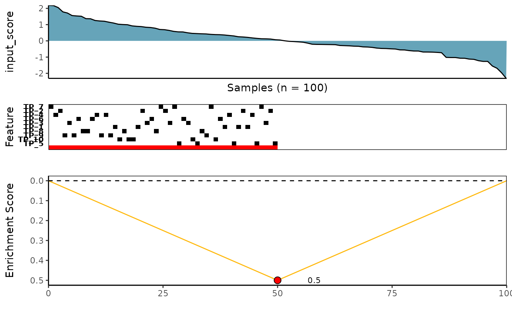

Permutation-Based Testing
Source:vignettes/permutation_based_testing.Rmd
permutation_based_testing.RmdCaDrA implements a forward/backward search algorithm
to look for a subset of features whose union is maximally associated
with an outcome of interest, based on (currently) one of four scoring
functions (Kolmogorov-Smirnov, Conditional
Mutual Information, Wilcoxon, and
custom-defined). To test whether the strength of the
association between the set of features and the observed input scores
(e.g., pathway activity, drug sensitivity, etc.) is greater than it
would be expected by chance, CaDrA supports
permutation-based significance testing. Importantly, the permutation
test iterates over the entire search procedure (e.g., if
top_N = 7, each permutation iteration will consist of
running the search over the top 7 features).
Load required datasets
- A
binary features matrixalso known asFeature Set(such as somatic mutations, copy number alterations, chromosomal translocations, etc.) The 1/0 row vectors indicate the presence/absence of ‘omics’ features in the samples. TheFeature Setmust be an object of class SummarizedExperiment from SummarizedExperiment package) - A vector of continuous scores (or
input_score) representing a functional response of interest (such as protein expression, pathway activity, etc.)
Find a subset of features that maximally associated with a given outcome of interest
Here we are using Kolmogorow-Smirnow (KS) scoring method to search for best features
ks_candidate <- CaDrA::candidate_search(
FS = sim_FS,
input_score = sim_Scores,
method = "ks_pval", # Use Kolmogorow-Smirnow scoring function
alternative = "less", # Use one-sided hypothesis testing
weight = NULL, # If weight is provided, perform a weighted-KS test
search_method = "both", # Apply both forward and backward search
top_N = 7, # Number of top features to kick start the search
max_size = 10, # Allow at most 10 features in meta-feature matrix
best_score_only = FALSE # Return meta-feature, its observed input scores and corresponding best score
)Visualize best meta-features result
# Extract the best meta-feature result
topn_best_meta <- topn_best(topn_list = ks_candidate)
# Visualize meta-feature result
meta_plot(topn_best_list = topn_best_meta)
Permutation-based testing
ks_perm_res <- CaDrA::CaDrA(
FS = sim_FS,
input_score = sim_Scores,
method = "ks_pval", # Use Kolmogorow-Smirnow scoring function
weight = NULL, # If weight is provided, perform a weighted-KS test
alternative = "less", # Use one-sided hypothesis testing
search_method = "both", # Apply both forward and backward search
top_N = 7, # Repeat the search with the top N features
max_size = 10, # Allow at most 10 features in the meta-feature matrix
n_perm = 1000, # Number of permutations
plot = FALSE, # We will plot later
ncores = 1 # Number of cores to perform parallelization
)Visualize permutation result
# Visualize permutation results
permutation_plot(perm_res = ks_perm_res)
SessionInfo
R version 4.2.3 (2023-03-15)
Platform: x86_64-pc-linux-gnu (64-bit)
Running under: Ubuntu 22.04.2 LTS
Matrix products: default
BLAS: /usr/lib/x86_64-linux-gnu/openblas-pthread/libblas.so.3
LAPACK: /usr/lib/x86_64-linux-gnu/openblas-pthread/libopenblasp-r0.3.20.so
locale:
[1] LC_CTYPE=C.UTF-8 LC_NUMERIC=C LC_TIME=C.UTF-8
[4] LC_COLLATE=C.UTF-8 LC_MONETARY=C.UTF-8 LC_MESSAGES=C.UTF-8
[7] LC_PAPER=C.UTF-8 LC_NAME=C LC_ADDRESS=C
[10] LC_TELEPHONE=C LC_MEASUREMENT=C.UTF-8 LC_IDENTIFICATION=C
attached base packages:
[1] stats4 stats graphics grDevices utils datasets methods
[8] base
other attached packages:
[1] CaDrA_0.99.2 SummarizedExperiment_1.28.0
[3] Biobase_2.58.0 GenomicRanges_1.50.2
[5] GenomeInfoDb_1.34.9 IRanges_2.32.0
[7] S4Vectors_0.36.2 BiocGenerics_0.44.0
[9] MatrixGenerics_1.10.0 matrixStats_0.63.0
[11] BiocStyle_2.26.0
loaded via a namespace (and not attached):
[1] sass_0.4.5 jsonlite_1.8.4 foreach_1.5.2
[4] R.utils_2.12.2 gtools_3.9.4 bslib_0.4.2
[7] highr_0.10 BiocManager_1.30.20 GenomeInfoDbData_1.2.9
[10] yaml_2.3.7 pillar_1.8.1 lattice_0.20-45
[13] glue_1.6.2 digest_0.6.31 XVector_0.38.0
[16] colorspace_2.1-0 htmltools_0.5.4 Matrix_1.5-3
[19] R.oo_1.25.0 plyr_1.8.8 pkgconfig_2.0.3
[22] misc3d_0.9-1 bookdown_0.33 zlibbioc_1.44.0
[25] purrr_1.0.1 scales_1.2.1 tibble_3.2.0
[28] farver_2.1.1 ggplot2_3.4.1 withr_2.5.0
[31] cachem_1.0.7 ppcor_1.1 cli_3.6.0
[34] magrittr_2.0.3 memoise_2.0.1 evaluate_0.20
[37] R.methodsS3_1.8.2 fs_1.6.1 fansi_1.0.4
[40] R.cache_0.16.0 doParallel_1.0.17 MASS_7.3-58.2
[43] gplots_3.1.3 textshaping_0.3.6 tools_4.2.3
[46] lifecycle_1.0.3 stringr_1.5.0 munsell_0.5.0
[49] DelayedArray_0.24.0 compiler_4.2.3 pkgdown_2.0.7
[52] jquerylib_0.1.4 caTools_1.18.2 systemfonts_1.0.4
[55] rlang_1.1.0 grid_4.2.3 RCurl_1.98-1.10
[58] iterators_1.0.14 labeling_0.4.2 bitops_1.0-7
[61] tcltk_4.2.3 rmarkdown_2.20 gtable_0.3.1
[64] codetools_0.2-19 reshape2_1.4.4 R6_2.5.1
[67] knitr_1.42 fastmap_1.1.1 utf8_1.2.3
[70] rprojroot_2.0.3 ragg_1.2.5 KernSmooth_2.23-20
[73] desc_1.4.2 stringi_1.7.12 parallel_4.2.3
[76] Rcpp_1.0.10 vctrs_0.6.0 xfun_0.37